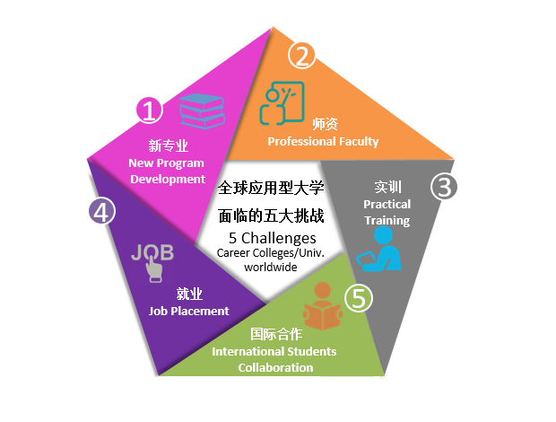

关注微信：


突破边界，赋能未来！
——安博职业教育业务介绍
全球应用型大学面临五大挑战
在今天快速发展与变革的产业环境下，不管是中国还是美国的应用型大学，都面临着类似的挑战。今天的产业环境是一个在新技术、新模式、新思维催化下快速迭代、快速裂变、快速整合的环境，线性系统无法适应非线性的环境。在这样的环境下，人才需求端与人才供应端之间的鸿沟越来越大，一方面，大学毕业生找不到合适的工作，另一方面，企业又不能快速找到合适的人才，双方都陷入困局。面对这样的局面，以培养应用型人才为主的高校在课程、师资、实训、就业与国际合作方面面临挑战。新的技术及其整合应用衍生出新的产业，比如大数据、区块链、人工智能等，这些技术和产业正在改变着全球的经济和全人类的生活。应用型大学如何设立相应的专业及其课程体系，面临着挑战。同时，如何找到匹配的师资，合适的实训项目和环境又是挑战。再者，要建立完善的新专业人才培养体系，顺畅的国际合作通道和专业的就业服务通道又必不可少。全球应用型大学这五大挑战普遍存在，解决这五大挑战的迫切性也越来越强。

18年，安博持续推动应用型人才教育
安博教育集团18年来坚持“帮助大学办大学”的理念，专注培养国际化、应用型人才。
安博于2000年向教育部提出培养软件工程硕士的构想，是“软件工程学院”这一新鲜事物的倡导者。安博大力提倡的”标准化、国际化”教学精神与独特的”软件教育产品”理论等全新的教育理念，得到了教育部、信息产业部的大力支持，已成为了当前全国各地的软件学院办学的指导性理念，并很快得到到了教育部、信息产业部有关领导的认同，安博教育集团是在全国较早开始培养软件工程硕士的机构。
2006年，安博IT实训体系通过教育部科技成果鉴定，并以此体系为基础安博与教育部开展“IT实训推广工程”，之后，安博教育集团在昆山、大连等地创立了大规模园区型实训基地。目前，安博大规模园区型实训基地布局在环渤海、长三角地区、珠三角等经济带，融入区域经济发展。经过多年的实践与推广，全国数百所院校通过与安博的合作提升了自身的办学能力与学生的就业力，安博职业教育深入整合学生就业需求和企业人才需求，从课程实训到项目实训，再到企业实训，匹配职业技能模型，一切从就业实际出发，实现大学生精确就业，也推动了众多院校向应用技术型高校转型。
2015年，安博又在原来积淀的基础上，结合目前国家“互联网+”战略的实施，率先开展应用技术型“互联网+”人才培养体系的研究、实践与拓展，“安博应用技术型人才培养体系与创新模式”在通过教育部科技成果鉴定，以中国教育学会会长钟秉林教授为专家委员会主任的专家组一致认为：“该体系强化了学校与企业、专业与产业之间的互联与融合，在强化专业技能的基础上拓宽产业相关知识、素养。安博应用技术型人才培养体系以全新的“互联网+”理念，构建了“以学习者为中心”的云服务平台，在国内率先探索SPOC模式，更好地为学生提供了个性化学习服务，教师的角色得以转变，优质课程资源得以有效共享。同时，该体系还引入企业的精细化、流程化、标准化管理和服务的思路与模式，建立了标准化教务管理体系，对教育教学全过程进行有效跟踪和考核，实现了教学过程与结果的科学管理，保障了应用技术型人才培养质量。”
我们的方案
面对共同的挑战，面对共同的需求，需要专业化的解决方案、共享的资源平台、科学的服务体系。安博教育集团从五大挑战入手，创建面向产业的应用型人才培养整体解决方案。
首先，基于安博教育集团的产业基因及对未来的判断，安博教育集团较早创设了软件工程、大数据、云计算、物联网、人工智能、集成电路等专业方向及其课程体系，这些课程体系从我们广泛的产业合作中汲取“养分”，动态迭代更新，安博研究院课程研发中心实时把课程新元素输入到全国教学服务终端。
其次，科技与教育全过程的完美融合是保障教学质量的必要手段，可以打破时间与空间界限整合最优质课程与师资资源，比如：2D、3D全息、自适应学习支持系统、教育物联网系统等，安博在这些方面都有多年积累的多项专利和成果，基础理论曾在《Nature》发表,新成果近期将在《Science》发表。
第三，以真实环境与真实项目为基础，以标准化体系为保障的实训是应用型人才培养的必要环节。专业课程、素养课程、项目案例、园区实训、效果评估，环环相扣，安博在这些方面有一系列开创性探索，有过十多年实践经验。
第四，在就业方面，也就是人才“产品”的输出过程，一方面需要建立丰富的企业合作资源体系，另一方面要建立标准化、人性化的就业服务流程，还要建立就业反馈信息的输入流程，这样就可以让学生好就业、就好业。
最后，在国际合作方面，如何更好地走出去，真正实现无边界的国际化人才培养，这需要一个国际资源协作平台为各个高校服务。在这个方面，安博创造了国际学分银行的模式，让国内外的高校真正打破边界，培养学贯中西的国际化人才。同时，安博在美国东西海岸都建立了国际教育服务基地。还与教育部教育国际交流中心、留学服务中心等机构建立了紧密合作。

在二十余年的创新与实践的积累基础上，目前，安博教育集团已经通过学院共建、专业共建、课程置换、短期实训、实验室建设、师资培训等服务形态与近千所高校合作，超过40万的毕业生在我们的帮助下走向自己的职业未来。
安博教育集团与合作伙伴一起突破边界、赋能未来：突破产业与大学之界突破、传统学科与高新技术之界、突破学科与学科之界、突破国家与文化之界；赋国际化联合培养、资源与人才的交流与引进之能、赋学科升级和师资培训之能、赋校园创新创业之能、赋智能化教育之能。
安博职业教育网址：http://college.ambow.com/

 京公网安备11010802030919号
京公网安备11010802030919号